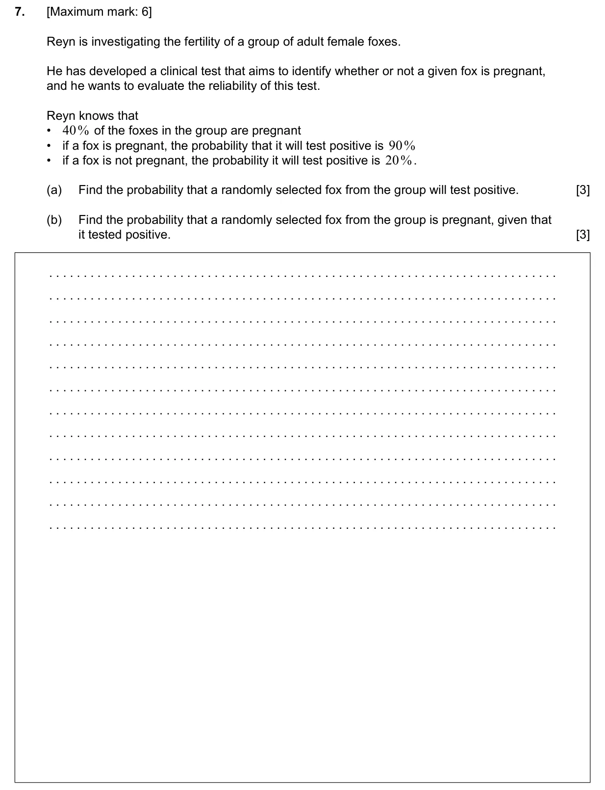
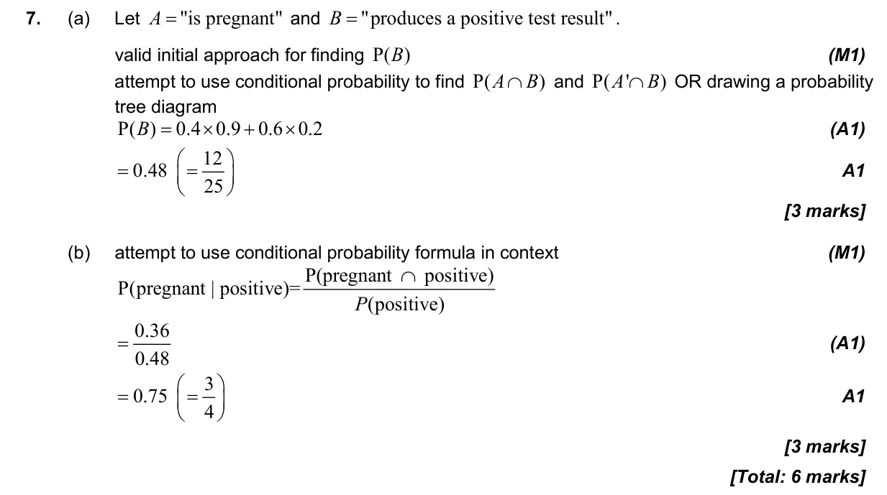

6 marks P1 TZ1 Section A No calculator 4.13 Bayes' theorem4.6 Combined, mutually exclusive, conditional, independence and probability diagrams4.11 Formal conditional probability and independence Question Hide breakdown ab Markscheme 